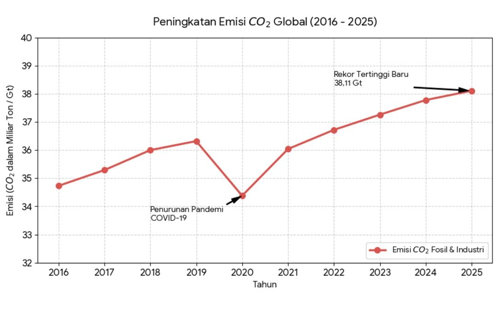
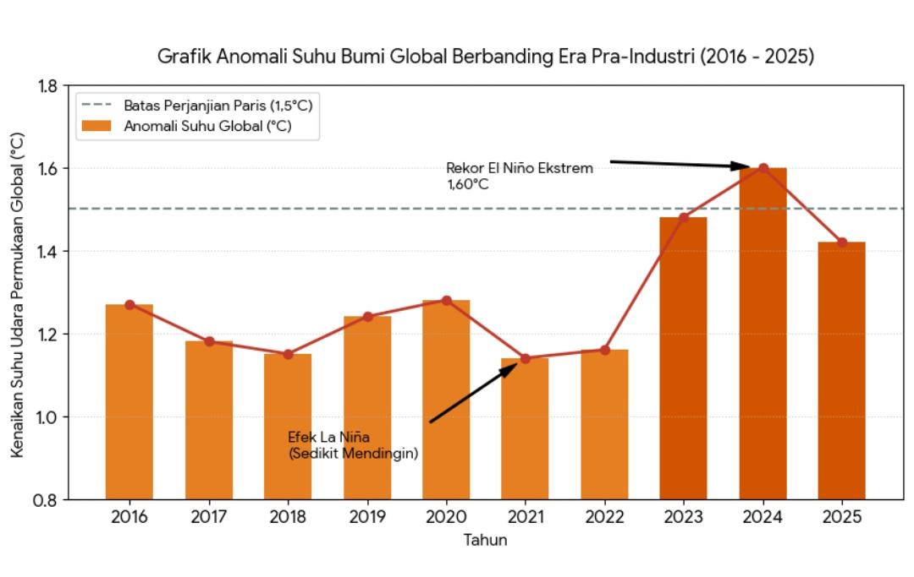

| Destya Inayah | |||||
| No | Perangkat | Daya (Watt) | Jumlah | Lama Penggunaan (Jam/Hari) | Total |
|---|---|---|---|---|---|
| 1 | Lampu LED | 10 | 7 | 8 | 560 |
| 2 | Televisi | 80 | 1 | 3 | 240 |
| 3 | Kipas Angin | 45 | 2 | 10 | 900 |
| 4 | Kulkas | 150 | 1 | 24 | 3600 |
| 5 | Rice Cooker | 300 | 1 | 6 | 1800 |
| 6 | Setrika | 350 | 1 | 1 | 350 |
| Total Konsumsi Energi | 7450 | ||||
| Total Emisi Karbon (kWh) | 7,45 | ||||
| M. Fauzul Adhim | |||||
| No | Perangkat | Daya | Jumlah | Lama Penggunaan | Total |
|---|---|---|---|---|---|
| 1 | Lampu LED | 10 | 10 | 8 | 800 |
| 2 | Televisi | 80 | 1 | 3 | 240 |
| 3 | Kipas Angin | 45 | 4 | 10 | 1800 |
| 4 | Kulkas | 150 | 1 | 24 | 3600 |
| 5 | Rice Cooker | 300 | 1 | 6 | 1800 |
| 6 | Mesin Cuci | 180 | 1 | 2 | 360 |
| Total Konsumsi Energi | 8600 | ||||
| Total Emisi Karbon (kWh) | 8,6 | ||||
| Santya Satya Kinanti | |||||
| No | Perangkat | Daya | Jumlah | Lama Penggunaan | Total |
|---|---|---|---|---|---|
| 1 | Lampu LED | 10 | 19 | 8 | 1520 |
| 2 | Televisi | 80 | 1 | 3 | 240 |
| 3 | Kipas Angin | 45 | 3 | 8 | 1080 |
| 4 | Kulkas | 150 | 1 | 24 | 3600 |
| 5 | Rice Cooker | 300 | 1 | 6 | 1800 |
| 6 | Setrika | 350 | 1 | 1 | 350 |
| 7 | Mesin Cuci | 180 | 1 | 2 | 360 |
| 8 | Blender | 200 | 1 | 1 | 200 |
| Total Konsumsi Energi | 9150 | ||||
| Total Emisi Karbon (kWh) | 9,15 | ||||
| Dikta Marzuqie | |||||
| No | Perangkat | Daya | Jumlah | Lama Penggunaan | Total |
|---|---|---|---|---|---|
| 1 | Lampu LED | 10 | 11 | 8 | 880 |
| 2 | Televisi | 80 | 1 | 3 | 240 |
| 3 | Kipas Angin | 45 | 3 | 10 | 1350 |
| 4 | Kulkas | 150 | 1 | 24 | 3600 |
| 5 | Rice Cooker | 300 | 1 | 6 | 1800 |
| 6 | Setrika | 350 | 1 | 1 | 350 |
| 7 | Mesin Cuci | 180 | 1 | 2 | 360 |
| Total Konsumsi Energi | 8580 | ||||
| Total Emisi Karbon (kWh) | 8,85 | ||||
| Kayla Marsya'atur R. | |||||
| No | Perangkat | Daya (Watt) | Jumlah | Lama Penggunaan | Total |
|---|---|---|---|---|---|
| 1 | Lampu LED | 10 | 11 | 13 | 1430 |
| 2 | Televisi | 80 | 1 | 2 | 160 |
| 3 | Kipas Angin | 45 | 2 | 8 | 720 |
| 4 | Kulkas | 150 | 1 | 24 | 3600 |
| 5 | Rice Cooker | 300 | 1 | 6 | 1800 |
| 6 | Setrika | 350 | 1 | 1 | 350 |
| 7 | Dispenser | 150 | 1 | 24 | 3600 |
| Total Konsumsi Energi | 11.660 | ||||
| Total Emisi Karbon (kWh) | 11,66 | ||||
| Jovita Fuji Juliani | |||||
| No | Perangkat | Daya (Watt) | Jumlah | Lama Penggunaan | Total |
|---|---|---|---|---|---|
| 1 | Lampu LED | 10 | 10 | 9 | 900 |
| 2 | Televisi | 80 | 1 | 3 | 240 |
| 3 | Kipas Angin | 45 | 5 | 9 | 2025 |
| 4 | Kulkas | 150 | 1 | 24 | 3600 |
| 5 | Rice Cooker | 300 | 1 | 6 | 1800 |
| 6 | Hair Dryer | 150 | 1 | 0.5 | 75 |
| Total Konsumsi Energi | 8640 | ||||
| Total Emisi Karbon (kWh) | 8,64 | ||||
| Nama | Jenis Kendaraan | Jumlah | Jenis BBM | Konsumsi (Liter/Bulan) | Faktor Emisi |
|---|---|---|---|---|---|
| Destya Inayah | Motor | 2 | Pertamax | 32 | 2.31 |
| M. Fauzul Adhim | Motor | 4 | Pertamax | 80 | 2.31 |
| Santya Satya Kinanti | Motor | 3 | Pertamax | 32 | 2.31 |
| Dikta Marzuqie | Motor | 2 | Pertamax | 40 | 2.31 |
| Kayla Marsya'atur R. | Motor | 1 | Pertalite | 25 | 2.31 |
| Jovita Fuji Juliani | Motor | 3 | Pertalite | 72 | 2.31 |
Keterkaitan antara kenaikan emisi karbon dioksida CO₂ dan kenaikan suhu bumi merupakan hubungan sebab-akibat yang didasarkan pada prinsip Efek Rumah Kaca. Secara alami, atmosfer bumi membutuhkan gas rumah kaca untuk menjaga suhu tetap hangat. Namun, aktivitas manusia seperti penggunaan listrik rumah tangga yang bersumber dari pembangkit listrik berbahan bakar fosil serta penggunaan bahan bakar minyak (BBM) pada kendaraan, secara masif melepaskan miliaran ton emisi CO₂ tambahan ke atmosfer bumi.

